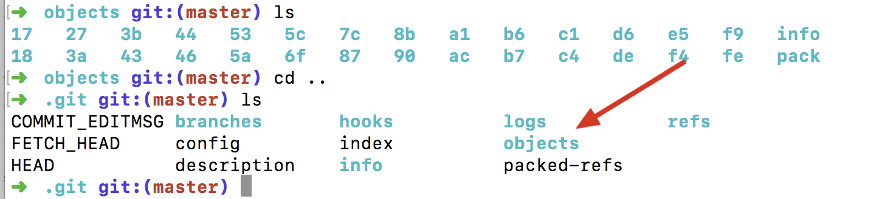

深入理解Git
本篇文章是对使用Git的使用的概述。然后对几个忽略的概念做了一下重新理解。
- 一：Git 文件管理
- 二：Git分支操作
- 三：Git提交操作
- 四：Git的Diff操作
- 五：远程版本库
- 六：多个仓库可以共用一个对象库吗？（很重要，初学时的疑惑点）
- 七：解释fast-forward，non-fast-forward
- 八：解释git rebase ，git cherry-pick
- 九：提交范围(很重要)
- 十：多人协作开发时，造成起点分叉的原因(还待研究)
一：Git 文件管理
工作目录
纯净的工作文件索引
git add命令，将对象添加到对象库中，维持一个新的目录树，这个目录树在工作区没有再次改变时是与工作区相同的目录树。新添加的修改与对象库里的目录树是不同的。而这些新添加的就是待提交到对象库里的修改。对象库
包括，提交对象(commit)，目录树对象（tree），实际的数据(blob)，标签(tag)；
blob对应正真的数据,文件的每个一版本。
tree对应目录。树对象下可以有其他数，最终都会有blob的指向
commit对应提交。对应当前目录树的一个完整快照从总体上来理解，就是工作目录，索引，对象库，都有一个目录树。从编辑，git add ,git commit，的三个过程，就是目录树的同步工作。当然对象库里的commit是某个目录树的引用即快照。这就快照就是目录树，而这个目录树维持着blob的数据。而commit就记录着作者日志等信息。而commit实际上是链表，将一个个commit串联起来，构成一个分支开发线。
二：Git分支操作
远程追踪分支(追踪远程分支)，本地追踪分支(追踪"远程追踪分支")，本地分支（谁也不追踪,自己玩,不具有pull功能）
分支管理
git show-branch
git branch -d "branchname"
git branch
git branch -r
git branch -a
git branch -d
git branch -D
git branch testbranch //从当前commit创建分支
git branch testbranch2 commitID //从指定的commit创建分支分支合并
HEAD 当前引用
FETCH_HEAD 远程跟踪分支的最新
ORIGIN_HEAD 本分支合并前的commit号或者是reset前的commit号
MERGE_HEAD 合并时别人的分支的commit号(在有冲突时,哈哈)
所有对对分支的操作都应该在本地操作。
三：Git提交操作
git reset git reset 精髓是--soft ,--mixed,--hard，三者对于head指向，索引树，工作目录的影响。
git reset --soft 提交会将HEAD引用指向给定提交,相当于是将后面对commit的提交的修改重新放入了索引里；(commit树与索引树不同)git reset --mixed 提交会将HEAD指向给定提交，索引内容改变以符合给定提交的树。相当于是将后这个提交的后面的带面放到工作区；(commit树与索引树相同，工作树不同)git reset --hard 提交会将HEAD指向给定提交。并且三个树同步。即此种情况，会导致新修改丢失。（工作区树，索引区，commit树）特别说明：
git reset --mixed,让你有机会重新编辑文件(系统默认)
git reset --soft,让你有机会重新修改提交日志
giet reset --hard,全部删除了.没机会了git revert
指定反转一个提交，并形成新的这个提交记录git cherry-pick(重点，难点)
将其他分支的commit指定合并到当前分支并形成一个新的提交git commit --amend
修改最新提交,主要是对此提交新添加内容，并在修改了最新的提交git checkout
检出分支内容，即沿着当前分支树路径取出内容git rebase(这个概念理解的不够透彻)
git rebase master topic
将topic可达到master的提交添加到master的最新的后面。（有时也有说成，将你的补丁变基到master分支的头）git rebase --onto master maint^ feature
将从maint到feature的路径的提交，迁移到master后面(onto表示把一条分支上的开发线整个移植到完全不同的分支上)。在此期间需要使用git rebase --continue 继续下一个提交，也可git rebase --abort进行编辑中止git rebase -i （ -- interactive）
合并提交，或者改变提交顺序，或者删除，编辑，即将两个提交合并成一个提交（注意不是合并分支）,
特别注意：这些操作可以专门针对某个文件进行操作。直接在commit后面添加 文件名就可以了
四：Git的Diff操作
diff的操作在实际的工作中是很有用的。
git diff
显示工作目录和索引差异git diff commit
显示工作目录与commit差异git diff --cached commit
显示索引中的变更和给定提交中的变更差异git diff commit1 commit2
显示两个commit差异
差异都是用各个树来进行比较，然后通过比较程序，进行差异
五：远程版本库
重点解释了“本地分支”，“本地追踪分支”，“远程追踪分支”区别
远程分支几个易混淆的概念
远程版本库：为版本库提供友好的名字，里面的分支就时远程分支。
本地版本库：本地库
本地分支：本地分支(没有设置track)
本地追踪分支：设置了track远程分支的分支(一般也就我们本地开发的分支)
远程追踪分支：当fectch拉取远程分支时，实际下载的文件都在远程追踪个分支里。当执行pull时，这个分支与本地的分支（这个本地分支的upstream要是这个远程追踪分支）执行merge,用来追踪远程版本库中分支的变化。config文件里如下是记录本地各个分支HEAD的commit号与远程的各个分支Head的commit号。 建立这个refspec预示你要通过从原始版本库中抓取变更来持续更新本地版本库。下面就是这个映射关系
配置信息里的定义: remote.origin.fetch定义的是远程的别名， 以及与**本地追踪分支的关联**（refs/heads/\*）， **远程追踪分支的关联**关系（refs/remotes/origin/*）; remote.origin.fetch=+refs/heads/*:refs/remotes/origin/*git remote 命令创建，删除，操作和查看远程版本库。
引入的所有远程版本库都记录在.git/config文件中。可以通过一个本地库添加多个远程仓库。git remote add origin https://github.com/xxx(仓库地址) git remote update origin git remote show origin git remote rm origin git remote prune 删除”远程版本库已经删除的分支“的远程追踪分支建立本地分支与远程追踪分支的关联(即设立本地追踪分支)
[remote "origin"] url = git@gitee.com:rjb_555/BookerReading.git fetch = +refs/heads/*:refs/remotes/origin/* [branch "master"] remote = origin merge = refs/heads/master [branch "develop"] remote = origin merge = refs/heads/develop[remote "origin"] 定义是远程仓库地址，远程仓库别名，本地追踪分支（refs/heads/），远程追踪分支（refs/remotes/origin/）的关联关系;
git branch --track test origin/dev
或者
git checkout -b mypu --track origin/testbranchGit fetch,pull,push 的实质
git fetch (拉取远程版本库到远程追踪分支)
git pull (git fectch，git merge origin/master)
git push (变更发送到远程版本库，在同步到origin/master)指定远程版本库的指定分支进行推送
git push origin master
这里要理解git push本质"将变更打包“传输”在解包“放到指定的库中。所以git push 只是变更。所以可以将其推到指定的远程仓库。在非快进的push时，会遭到（non-fast forward）拒绝。 在此时因为远程的已经有人提交了。你的分支在当前远程分支之后，但有共同的提交记录。push -f 强制覆盖(覆盖掉别人的记录)。但此种情况一般都是先Pull,合并别人的提交。
删除与创建远程分支
git branch testbranch
git push origin testbranch(直接在远程创建了一根分支)
git push origin :foo原理(git push origin 源：目标)
git push origin testbranch (简写)(如果远程没偶testbranch ,会将本地的分支推送到远程的版本,即相当于在远程新建分支)
git push origin testbranch:testbranch
git push origin raotest:testbranch(将内容推到指定的分支)
Git push origin :testbranch (将空分支推发哦指定分支，即删除远程分支)
六：多个仓库可以共用一个对象库吗？（很重要，初学时的疑惑点）
经过实践是可以的。比如，当前库是A，在分支master上，我现在在当前目录添加一个远程的仓库B，幷Pull下来。这时pull下来的对象与库A共用一个对象库。所谓的共用一个对象仓库，就时存储真实数据的地方。当时一般情况我们不这么弄，因为如果都放入一个对象库里，会导致上库变大，上传时变慢。

当如果是这样一个使用场景（fork公司的参考到你自己的远程库，然后通过发pull request的工作方式）：
公司的库A，你fork公式的库B,你在你本地添加了这两个的远程库，都pull下来，因为你们使用的是很多相同的文件，所以，不会造成很多重复的存储，因为文件都是按内容hash的。如果当远程同步不能工作时（将A的内容同步到B），可以先pull下A,然后本地合并到B，在通过将B库push 到你自己的远程，然后通过发push request方式请求公司的库的合并。当然你有权限合公司库，可以直接push到公司的库。
七：解释fast-forward，non-fast-forward
我们举例说明：
开发一直在master分支进行，但忽然有一个新的想法，于是新建了一个develop的分支，并在其上进行一系列提交，完成时，回到 master分支，此时，master分支在创建develop分支之后并未产生任何新的commit。此时的合并就叫fast forward。
反之，是non-fast-forwad
哈哈，在知道了，命令行，长长有fast-forward的日志信息！
八：解释git rebase ，git cherry-pick
者两命令，不常用，但有时能解决关键问题
git cherry-pick
git cherry-pick 通常用于将一个分支的特定提交引入一个不同的分支中。
举例说明
master分支已经有很多提交。master其中一个提交时修复一个bug时，这个bug在另一个分支也存在，需要将这个提交也放到dev分支。在dev会形成一个新的提交。
git checkout dev
git cherry-pick master~2
一句话总结，就时将一个分支的提交拷贝到另一个分支的最后面，幷形成一个新的提交(这句话很重要)
git rebase
rebase是个很重要的概念，需要比较综合的能力才能理解的比较好。我将在这篇文章里做详细的解释详解Git里的Rebase操作
九：提交范围(很重要)
很多命令都可以对提交范围执行某些操作。那么怎么表达这些提交范围呢？
"..."表示一个范围，“开始...结束"
"maser~2"表示master分支往后数第二个提交。（表示的是一个提交点）
示例
1. master~5 ... master~2,表示master的倒数第5个提交到倒数第2个提交之间的提交
2. topic...master，表示在master分支而不在topic分支生的提交
终于写完了这篇总结，以前看书《Git版本控制管理》JonLoeLiger 著 因为没有实践的前提，所以理解的不深。用了将近一年后，重新回过来看时，很做概念就很清晰了。